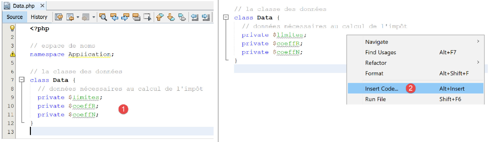

8. Esercizio pratico – Versione 3
Riprenderemo l'esercizio trattato in precedenza (sezioni 4.3 e 4.4) per risolverlo utilizzando codice PHP che impiega una classe.
8.1. Struttura della directory degli script

8.2. L'eccezione [ExceptionImpots]
Nella versione 03, quando un costruttore o un metodo di classe incontra un errore, genererà la seguente eccezione [ExceptionImpots]:
Commenti
- riga 4: la classe [ExceptionImpots] si trova nello spazio dei nomi [Application];
- riga 6: la classe [ExceptionImpots] estende la classe PHP predefinita [RuntimeException];
- riga 8: il costruttore richiede due parametri:
- $message: è il messaggio di errore associato all'eccezione;
- $code: è il codice di errore associato all'eccezione. Se non è presente, verrà utilizzato il codice 0;
8.3. La classe [TaxAdminData]
Nella versione 02, i dati dell'amministrazione fiscale sono stati raccolti:
- prima in un file JSON;
- poi da questo file JSON in un array associativo;
Nella versione 03, i dati dell'amministrazione fiscale si trovano ancora nel file [taxadmindata.json] ma con nomi di attributi diversi:
{
"limites": [
9964,
27519,
73779,
156244,
0
],
"coeffR": [
0,
0.14,
0.3,
0.41,
0.45
],
"coeffN": [
0,
1394.96,
5798,
13913.69,
20163.45
],
"plafondQfDemiPart": 1551,
"plafondRevenusCelibatairePourReduction": 21037,
"plafondRevenusCouplePourReduction": 42074,
"valeurReducDemiPart": 3797,
"plafondDecoteCelibataire": 1196,
"plafondDecoteCouple": 1970,
"plafondImpotCouplePourDecote": 2627,
"plafondImpotCelibatairePourDecote": 1595,
"abattementDixPourcentMax": 12502,
"abattementDixPourcentMin": 437
}
Nella versione 02, questo file veniva utilizzato per inizializzare un array associativo. Nella versione 03, il file inizializzerà la seguente classe [TaxAdminData]:
<?php
namespace Application;
class TaxAdminData {
// tax brackets
private $limites;
private $coeffR;
private $coeffN;
// tax calculation constants
private $plafondQfDemiPart;
private $plafondRevenusCelibatairePourReduction;
private $plafondRevenusCouplePourReduction;
private $valeurReducDemiPart;
private $plafondDecoteCelibataire;
private $plafondDecoteCouple;
private $plafondImpotCouplePourDecote;
private $plafondImpotCelibatairePourDecote;
private $abattementDixPourcentMax;
private $abattementDixPourcentMin;
// initialization
public function setFromJsonFile(string $taxAdminDataFilename): TaxAdminData {
// retrieve the contents of the tax data file
$fileContents = \file_get_contents($taxAdminDataFilename);
$erreur = FALSE;
// mistake?
if (!$fileContents) {
// we note the error
$erreur = TRUE;
$message = "Le fichier des données [$taxAdminDataFilename] n'existe pas";
}
if (!$erreur) {
// retrieve the jSON code from the configuration file in an associative array
$arrayTaxAdminData = \json_decode($fileContents, true);
// mistake?
if ($arrayTaxAdminData === FALSE) {
// we note the error
$erreur = TRUE;
$message = "Le fichier de données jSON [$taxAdminDataFilename] n'a pu être exploité correctement";
}
}
// mistake?
if ($erreur) {
// throw an exception
throw new ExceptionImpots($message);
}
// initialization of class attributes
foreach ($arrayTaxAdminData as $key => $value) {
$this->$key = $value;
}
// check that all keys have been initialized
$arrayOfAttributes = \get_object_vars($this);
foreach ($arrayOfAttributes as $key => $value) {
if (!isset($this->$key)) {
throw new ExceptionImpots("L'attribut [$key] de [TaxAdminData] n'a pas été initialisé");
}
}
// we check that we only have real values
foreach ($this as $key => $value) {
// $value must be a real number >=0 or an array of reals >=0
$result = $this->check($value);
// mistake?
if ($result->erreur) {
// throw an exception
throw new ExceptionImpots("La valeur de l'attribut [$key] est invalide");
} else {
// we note the value
$this->$key = $result->value;
}
}
// we return the object
return $this;
}
private function check($value): \stdClass {
…
return $result;
}
// toString
public function __toString() {
// object's Json string
return \json_encode(\get_object_vars($this), JSON_UNESCAPED_UNICODE);
}
// getters and setters
public function getLimites() {
return $this->limites;
}
public function getCoeffR() {
return $this->coeffR;
}
…
}
public function setLimites($limites) {
$this->limites = $limites;
return $this;
}
public function setCoeffR($coeffR) {
$this->coeffR = $coeffR;
return $this;
}
…
}
Commenti
- righe 6–20: le proprietà che conterranno le proprietà con lo stesso nome presenti nel file JSON [taxadmindata.json]. Questo è un punto importante: le proprietà della classe [TaxAdminData] sono identiche a quelle presenti nel file JSON [taxadmindata.json]. Questa caratteristica semplifica notevolmente la scrittura del codice;
- La classe [TaxAdminData] non ha un costruttore. In PHP non è possibile avere più costruttori. Definirne uno impedisce quindi che l'oggetto venga inizializzato in qualsiasi altro modo. D'ora in poi, le nostre classi non avranno un costruttore, ma disporranno invece di diversi metodi del tipo [setFromSomething] che consentiranno loro di essere inizializzate in modi diversi. Un oggetto di tipo [TaxAdminData] viene quindi costruito utilizzando l'espressione:
- riga 23: il metodo [setFromJsonFile] inizializza gli attributi della classe con quelli omonimi presenti nel file [$jsonFilename];
- righe 24–42: il file JSON viene analizzato per costruire l'array associativo [$arrayTaxAdminData]. Abbiamo già visto questo codice nello script [main.php] della versione 02;
- righe 44–47: se si verifica un errore durante l'elaborazione del file JSON, viene generata un'eccezione. Questa eccezione si propagherà fino allo script principale [main.php];
- righe 48–51: Gli attributi della classe vengono inizializzati. Qui, sfruttiamo il fatto che l'array associativo [$arrayTaxAdminData] e la classe [TaxAdminData] abbiano attributi con gli stessi nomi dei valori del file JSON;
- righe 53–57: Verifichiamo che tutti gli attributi della classe [TaxAdminData] siano stati inizializzati;
- riga 53: l'espressione [get_object_vars($this)] restituisce un array associativo i cui attributi sono quelli dell'oggetto [$this], ovvero gli attributi della classe [TaxAdminData]. Qui è importante comprendere che il processo di inizializzazione nelle righe 48–51 potrebbe aver aggiunto attributi all'oggetto [$this]. Pertanto, se scriviamo:
allora l'attributo [x] viene aggiunto all'oggetto [$this] anche se questo attributo non è stato dichiarato nella classe [TaxAdminData]. Ciò che è certo è che gli attributi nelle righe 6–20 fanno effettivamente parte dell'oggetto [$this], ma potrebbero non essere stati inizializzati. Si tratta di un errore facile da commettere; basta un errore di battitura nel nome di un attributo nel file [taxadmindata.json];
- righe 54–57: iteriamo attraverso tutti gli attributi di [$this] e, se uno di essi non è stato inizializzato, generiamo un'eccezione;
- un attributo potrebbe essere inizializzato con un valore errato. In PHP non è possibile specificare un tipo per gli attributi. Pertanto, l'operazione:
è possibile anche se l'attributo [$plafondQfDemiPart] dovrebbe essere un numero reale;
- righe 59–71: verifichiamo che ciascuno degli attributi della classe abbia un valore reale positivo o pari a zero. La funzione [check] alla riga 76 svolge questo compito. Il suo parametro [$value] è un singolo valore o un array di valori;
- riga 62: la funzione [check] restituisce un oggetto di tipo [\stdClass] con due attributi:
- [error]: TRUE se si è verificato un errore, FALSE in caso contrario;
- [value]: il valore numerico effettivo corrispondente al parametro [$value] passato alla riga 62;
- riga 64: verifichiamo se la verifica ha avuto esito positivo o meno;
- riga 66: se un attributo non è un numero reale positivo o zero, viene generata un'eccezione;
- riga 69: altrimenti, registriamo il suo valore numerico;
- riga 73: restituiamo l'oggetto [$this] come risultato;
La funzione [check] è la seguente:
private function check($value): \stdClass {
// $value est soit un tableau d'éléments soit un unique élément
// on crée un tableau
if (!\is_array($value)) {
$tableau = [$value];
} else {
$tableau = $value;
}
// on transforme le tableau d'éléments de type non connu en tableau de réels
$newTableau = [];
$result = new \stdClass();
// les éléments du tableau doivent être des nombres décimaux positifs ou nuls
$modèle = '/^\s*([+]?)\s*(\d+\.\d*|\.\d+|\d+)\s*$/';
for ($i = 0; $i < count($tableau); $i ++) {
if (preg_match($modèle, $tableau[$i])) {
// on met le float dans newTableau
$newTableau[] = (float) $tableau[$i];
} else {
// on note l'erreur
$result->erreur = TRUE;
// on quitte
return $result;
}
}
// on rend le résultat
$result->erreur = FALSE;
if (!\is_array($value)) {
// une seule valeur
$result->value = $newTableau[0];
} else {
// une liste de valeurs
$result->value = $newTableau;
}
return $result;
}
Commenti
- Riga 1: Il parametro [$value] è un array o un singolo elemento. Inoltre, il suo tipo è sconosciuto. Il valore proviene dal file [taxadmindata.json]. A seconda dei valori inseriti in questo file, i valori letti possono essere numeri interi, numeri reali, stringhe o valori booleani. Ad esempio:
"plafondQfDemiPart": 1551,
"plafondQfDemiPart": 1551.78,
"plafondQfDemiPart": "1551",
"plafondQfDemiPart": "xx",
Nel caso 1, il valore è di tipo [intero], nel caso 2 di tipo [virgola mobile], nel caso 3 di tipo [stringa] convertibile in un numero e nel caso 4 di tipo [stringa] non convertibile in un numero;
- righe 4–8: creiamo un array dal parametro [$value] ricevuto nella riga 1;
- riga 10: l'array che riempiremo con numeri reali;
- riga 11: il risultato sarà un oggetto di tipo [\stdClass];
- riga 13: espressione relazionale per un numero reale positivo o zero;
- righe 14–24: verifichiamo che tutti gli elementi dell'array [$tableau] siano numeri reali positivi o pari a zero e riempiamo l'array [$newTableau] con questi elementi convertiti in tipo [float] (riga 17);
- righe 18–23: non appena viene rilevato un elemento che non è un numero reale positivo o zero, l'errore viene annotato nel risultato e il risultato viene restituito;
- righe 25–34: caso in cui tutti gli elementi dell'array [$tableau] sono stati dichiarati validi;
- Riga 32: il valore restituito [$result→value] è un array di float o un singolo float;
La funzione [__toString] nelle righe 82–85 restituisce la stringa JSON degli attributi e dei valori dell'oggetto [$this].
Righe 87–110: i getter e i setter della classe;
Nota: a volte può risultare un po' noioso dover scrivere tutti i metodi get/set per una classe, specialmente quando ci sono molte proprietà. NetBeans può generare automaticamente sia questi che il costruttore. Per farlo, basta selezionare le proprietà [1]:

- in [2], fare clic con il tasto destro del mouse nel punto in cui si desidera inserire il codice, quindi selezionare l'opzione [Inserisci codice];

- in [4], indicare che si desidera generare il costruttore;
- in [5], selezionare tutti gli attributi: ciò significa che si desidera che il costruttore abbia un parametro per ciascun attributo;
- in [6], seleziona lo stile del costruttore Java;
- in [7], specifica che desideri esplicitamente la parola chiave [public] prima del costruttore;
- In [8], clicca su OK;

- In [9], NetBeans ha generato il costruttore. Tuttavia, non è stato in grado di specificare i tipi dei parametri perché non li conosce. Aggiungili tu stesso [10];
Per generare i getter e i setter, ripetere i passaggi 2–4 e, al passaggio 4, selezionare [Getter e Setter]:

- in [5], specificare che si desiderano metodi getter e setter per ciascuno degli attributi;
- In [6], specificare che si desiderano i getter e i setter nello stile utilizzato da Java: setAttribute, getAttribute;
- In [7], specificare che questi getter e setter devono essere pubblici;
- in [8], fare clic su OK;

- In [9], i getter e i setter generati da NetBeans;
Eliminare questi getter e setter e ripetere i passaggi da 2 a 7.
- In [8], selezionare l'opzione [Fluent Setter] che non era stata selezionata in precedenza;
Il risultato è il seguente:

Ogni setter termina con un'operazione [return $this]. Ciò consente di inizializzare gli attributi come segue:
Infatti, il valore di [$data→setLimites($limites)] (riga 32 del codice) è [$this], quindi qui [$data]. Possiamo quindi chiamare il metodo [setCoeffR($coeffR)] di questo oggetto e così via, poiché a sua volta anche questo metodo restituisce [$this] (riga 37 del codice). Questo stile di scrittura dei metodi di classe, in cui i metodi che non dovrebbero restituire nulla restituiscono invece l'oggetto [$this], è chiamato scrittura fluida. Rende questi metodi più facili da usare.
8.4. L'interfaccia [InterfaceImpots]
Definiamo ora la seguente interfaccia [InterfaceImpots] [InterfaceImpots.php]:
<?php
// namespace
namespace Application;
interface InterfaceImpots {
// retrieve tax bracket data for tax calculations
// can throw the ExceptionImpots exception
public function getTaxAdminData(): TaxAdminData;
// the interface knows how to calculate a tax
public function calculerImpot(string $marié, int $enfants, int $salaire): array;
// the interface can process data in text files
// $usersFilename: user data file in the form of marital status, number of children, annual salary
// $resultsFilename: results file with marital status, number of children, annual salary, tax amount
// $errorsFilename: file of errors encountered
// can throw the ExceptionImpots exception
public function executeBatchImpots(string $usersFileName, string $resultsFileName, string $errorsFileName): void;
}
Commenti
- riga 4: l'interfaccia è collocata nello spazio dei nomi [Application];
- riga 6: l'interfaccia per il calcolo delle imposte;
- riga 10: il metodo [getTaxAdminData] recupererà i dati dall'amministrazione fiscale in un oggetto di tipo [TaxAdminData], che abbiamo appena introdotto. Poiché questi dati potrebbero trovarsi in un file, in un database o persino in rete, il metodo [getTaxAdminData] potrebbe non riuscire a recuperarli. In questo caso, genererà un'eccezione [ExceptionImpots]. Questo è il metodo standard nella programmazione orientata agli oggetti per segnalare un errore riscontrato in un metodo o in un costruttore;
- riga 13: il metodo [calculateTax] calcolerà l'imposta di un utente;
- riga 20: il metodo [executeBatchImpots] calcolerà l'imposta per più contribuenti:
- [$usersFileName] è il nome del file di testo contenente i dati dei contribuenti;
- [$resultsFileName] è il nome del file di testo contenente gli importi delle imposte per questi contribuenti;
- [$errorsFileName] è il nome del file di testo contenente gli errori riscontrati durante l'elaborazione di questi file;
Il contenuto del file di testo [$usersFileName] potrebbe essere simile al seguente:
oui,2,55555
oui,2,50000
oui,3,50000
non,2,100000
non,3x,100000
oui,3,100000
oui,5,100000x
non,0,100000
oui,2,30000
non,0,200000
oui,3,200000
Si noti che le righe 5 e 7 contengono voci errate.
Il contenuto del file di testo [$resultsFileName] sarà quindi il seguente:
e quello nel file di testo [$errorsFileName] è il seguente:
8.5. La classe [Utilities]
Definiamo anche una classe [Utilities] in un file denominato [Utilities.php]:
<?php
// namespace
namespace Application;
// a class of utility functions
abstract class Utilitaires {
public static function cutNewLinechar(string $ligne): string {
// delete the end-of-line mark from $ligne if it exists
$longueur = strlen($ligne); // line length
while (substr($ligne, $longueur - 1, 1) == "\n" or substr($ligne, $longueur - 1, 1) == "\r") {
$ligne = substr($ligne, 0, $longueur - 1);
$longueur--;
}
// end - return the line
return($ligne);
}
}
Commenti
- riga 4: anche la classe [Utilities] è collocata nello spazio dei nomi [Examples];
- riga 9: il metodo [cutNewLineChar] rimuove qualsiasi carattere di fine riga dal testo che gli viene passato come parametro. Restituisce la nuova riga così formata. Si noti che si tratta di un metodo statico, il che significa che verrà chiamato nella forma [Utilities::cutNewLineChar];
8.6. La classe astratta [AbstractBaseImpots]
L'interfaccia [InterfaceImpots] sarà implementata dalla seguente classe astratta [AbstractBaseImpots] [AbstractBaseImpots.php]:
<?php
// namespace
namespace Application;
// definition of an abstract class AbstractBaseImpots
abstract class AbstractBaseImpots implements InterfaceImpots {
// tax administration data
private $taxAdminData = NULL;
// data required for tax calculation
abstract function getTaxAdminData(): TaxAdminData;
// tAX CALCULATION
// --------------------------------------------------------------------------
public function calculerImpot(string $marié, int $enfants, int $salaire): array {
// $marié : yes, no
// $enfants : number of children
// $salaire: annual salary
// $this->taxAdminData: tax administration data
//
// we check that we have the correct data from the tax authorities
if ($this->taxAdminData === NULL) {
$this->taxAdminData = $this->getTaxAdminData();
}
// tax calculation with children
$result1 = $this->calculerImpot2($marié, $enfants, $salaire);
$impot1 = $result1["impôt"];
// tax calculation without children
if ($enfants != 0) {
$result2 = $this->calculerImpot2($marié, 0, $salaire);
$impot2 = $result2["impôt"];
// application of the family allowance ceiling
$plafonDemiPart = $this->taxAdminData->getPlafondQfDemiPart();
if ($enfants < 3) {
// $PLAFOND_QF_DEMI_PART euros for the first 2 children
$impot2 = $impot2 - $enfants * $plafonDemiPart;
} else {
// $PLAFOND_QF_DEMI_PART euros for the first 2 children, double for subsequent children
$impot2 = $impot2 - 2 * $plafonDemiPart - ($enfants - 2) * 2 * $plafonDemiPart;
}
} else {
$impot2 = $impot1;
$result2 = $result1;
}
// we take the highest tax
if ($impot1 > $impot2) {
$impot = $impot1;
$taux = $result1["taux"];
$surcôte = $result1["surcôte"];
} else {
$surcôte = $impot2 - $impot1 + $result2["surcôte"];
$impot = $impot2;
$taux = $result2["taux"];
}
// calculation of any discount
$décôte = $this->getDecôte($marié, $salaire, $impot);
$impot -= $décôte;
// calculation of any tax reduction
$réduction = $this->getRéduction($marié, $salaire, $enfants, $impot);
$impot -= $réduction;
// result
return ["impôt" => floor($impot), "surcôte" => $surcôte, "décôte" => $décôte, "réduction" => $réduction, "taux" => $taux];
}
// --------------------------------------------------------------------------
private function calculerImpot2(string $marié, int $enfants, float $salaire): array {
…
// result
return ["impôt" => $impôt, "surcôte" => $surcôte, "taux" => $coeffR[$i]];
}
// revenuImposable=annualwage-discount
// the allowance has a minimum and a maximum
private function getRevenuImposable(float $salaire): float {
…
// result
return floor($revenuImposable);
}
// calculates any discount
private function getDecôte(string $marié, float $salaire, float $impots): float {
…
// result
return ceil($décôte);
}
// calculates any reduction
private function getRéduction(string $marié, float $salaire, int $enfants, float $impots): float {
…
// result
return ceil($réduction);
}
public function executeBatchImpots(string $usersFileName, string $resultsFileName, string $errorsFileName): void {
…
}
}
Commenti
- riga 4: la classe [AbstractBaseImpots] si troverà nello spazio dei nomi [Application], come gli altri elementi dell'applicazione attualmente in fase di scrittura;
- riga 7: la classe [AbstractBaseImpots] implementa l'interfaccia [InterfaceImpots];
- riga 9: i dati dell'amministrazione fiscale saranno inseriti nell'attributo [$taxAdminData];
- riga 12: implementazione del metodo [getTaxAdminData] dell'interfaccia. Non sappiamo ancora come definire questo metodo: nella sezione precedente abbiamo visto un esempio in cui i dati dell'amministrazione fiscale venivano prelevati da un file JSON. Vedremo un altro caso in cui i dati saranno recuperati da un database. Spetterà alle classi derivate definire il contenuto del metodo [getTaxAdminData]. I due casi precedenti daranno origine a due classi derivate. Il metodo [getTaxAdminData] è quindi dichiarato astratto, il che rende automaticamente astratta la classe stessa (riga 7);
- righe 15–64: la funzione di calcolo delle imposte già incontrata nelle sezioni link e link;
- La versione 02 memorizzava i dati dell'amministrazione fiscale in un array associativo [$taxAdminData]. La versione 03 li memorizza nell'attributo [$this→taxAdminData]. La prima differenza tra questi due approcci è la visibilità dei dati fiscali:
- nella versione 02, l'array associativo [$taxAdminData] non aveva visibilità globale. Veniva quindi passato come parametro a tutte le funzioni di calcolo delle imposte;
- nella versione 03, l'attributo [$this→taxAdminData] ha visibilità globale per tutti i metodi della classe. Non viene quindi passato come parametro a tutte le funzioni di calcolo delle imposte;
- Una seconda differenza deriva dal fatto che la versione 03 sostituisce le funzioni con i metodi di classe. Ogni chiamata al metodo viene ora effettuata utilizzando l'espressione [$this→getMethod(…)] (righe 27, 31, 57, 60);
- una terza differenza è che quando il metodo [calculateTax] inizia il suo lavoro, non sa se l'attributo [private $taxAdminData] di cui ha bisogno sia stato inizializzato. Questo perché il costruttore della classe non lo inizializza. Spetta quindi al metodo [calculateTax] farlo utilizzando il metodo [getTaxAdminData] alla riga 12. Questo è ciò che viene fatto alle righe 23–25;
- a parte queste differenze, i metodi di calcolo delle imposte rimangono gli stessi delle versioni precedenti;
La funzione [executeBatchImpots] è la seguente:
public function executeBatchImpots(string $usersFileName, string $resultsFileName, string $errorsFileName): void {
// pas mal d'erreurs peuvent se produire dès qu'on gère des fichiers
try {
// ouverture fichier des erreurs
$errors = fopen($errorsFileName, "w");
if (!$errors) {
throw new ExceptionImpots("Impossible de créer le fichier des erreurs [$errorsFileName]", 10);
}
// ouverture fichier des résultats
$results = fopen($resultsFileName, "w");
if (!$results) {
throw new ExceptionImpots("Impossible de créer le fichier des résultats [$resultsFileName]", 11);
}
// lecture des données utilisateur
// chaque ligne a la forme statut marital, nombre d'enfants, salaire annuel
$data = fopen($usersFileName, "r");
if (!$data) {
throw new ExceptionImpots("Impossible d'ouvrir en lecture les déclarations des contribuables [$usersFileName]", 12);
}
// on exploite la ligne courante du fichier des données utilisateur
// qui a la forme statut marital, nombre d'enfants, salaire annuel
$num = 1; // n° ligne courante
$nbErreurs = 0; // nbre d'erreurs rencontrées
while ($ligne = fgets($data, 100)) {
// debug
// print "ligne n° " . ($i + 1) . " : " . $ligne;
// on enlève l'éventuelle marque de fin de ligne
$ligne = Utilitaires::cutNewLineChar($ligne);
// on récupère les 3 champs marié:enfants:salaire qui forment $ligne
list($marié, $enfants, $salaire) = explode(",", $ligne);
// on les vérifie
// le statut marital doit être oui ou non
$marié = trim(strtolower($marié));
$erreur = ($marié !== "oui" and $marié !== "non");
if (!$erreur) {
// le nombre d'enfants doit être un entier
$enfants = trim($enfants);
if (!preg_match("/^\s*\d+\s*$/", $enfants)) {
$erreur = TRUE;
} else {
$enfants = (int) $enfants;
}
}
if (!$erreur) {
// le salaire est un entier sans les centimes d'euros
$salaire = trim($salaire);
if (!preg_match("/^\s*\d+\s*$/", $salaire)) {
$erreur = TRUE;
} else {
$salaire = (int) $salaire;
}
}
// erreur ?
if ($erreur) {
fputs($errors, "la ligne [$num] du fichier [$usersFileName] est erronée\n");
$nbErreurs++;
} else {
// on calcule l'impôt
$result = $this->calculerImpot($marié, (int) $enfants, (int) $salaire);
// on inscrit le résultat dans le fichier des résultats
$result = ["marié" => $marié, "enfants" => $enfants, "salaire" => $salaire] + $result;
fputs($results, \json_encode($result, JSON_UNESCAPED_UNICODE) . "\n");
}
// ligne suivante
$num++;
}
// des erreurs ?
if ($nbErreurs > 0) {
throw new ExceptionImpots("Il y a eu des erreurs", 15);
}
} catch (ExceptionImpots $ex) {
// on relance l'exception
throw $ex;
} finally {
// on ferme tous les fichiers
fclose($data);
fclose($results);
fclose($errors);
}
}
Commenti nel codice
- riga 1: la funzione accetta tre parametri:
- [$usersFileName]: il nome del file di testo contenente i dati dei contribuenti. Ogni riga di testo contiene i dati di un contribuente nel seguente formato: stato civile (sì/no), numero di figli, stipendio annuo:
- (continua)
- [$resultsFileName]: il nome del file di testo che conterrà i risultati. Ogni riga di testo avrà il seguente formato:
- (continua)
- [$errorsFileName]: il nome del file di testo contenente gli errori:
la ligne [5] du fichier [taxpayersdata.txt] est erronée
la ligne [7] du fichier [taxpayersdata.txt] est erronée
- riga 3: poiché diverse operazioni possono generare un'eccezione, un blocco try / catch / finally racchiude l'intero codice del metodo;
- righe 3–19: i tre file vengono aperti. Viene generata un'eccezione non appena un'operazione di apertura fallisce;
- riga 24: le righe del file [$data] vengono lette una per una in blocchi di massimo 100 caratteri (le righe hanno tutte una lunghezza inferiore a 100 caratteri);
- riga 28: il metodo statico [Utilities::cutNewLineChar] viene utilizzato per rimuovere eventuali caratteri di fine riga;
- riga 30: vengono recuperati i tre elementi della riga letta;
- righe 33–52: viene verificata la validità dei tre elementi. Qui, se si verifica un errore, non viene generata un'eccezione, ma il messaggio di errore viene scritto nel file di testo [$errors] (riga 55);
- riga 59: se la riga letta è valida, viene calcolata l'imposta. Il risultato è ottenuto come un array associativo ["tax" => floor($tax), "surcharge" => $surcharge, "discount" => $discount, "reduction" => $reduction, "rate" => $rate];
- riga 61: le chiavi [married, children, salary] vengono aggiunte al risultato;
- riga 61: il risultato viene scritto nel file di testo [$results] sotto forma di stringa JSON del risultato ottenuto;
- righe 68–70: al termine dell'elaborazione del file [$data], controlliamo il numero di righe errate incontrate. Se ce n'è almeno una, generiamo un'eccezione;
- righe 71–74: intercettiamo l'eccezione che il codice potrebbe aver generato e la rigeneriamo immediatamente (riga 73). Lo scopo di questa tecnica è includere un blocco [finally] alle righe 74–79: indipendentemente da come termina l'esecuzione del codice del metodo, i tre file che potrebbero essere stati aperti da questo codice vengono chiusi. La chiusura di un file che non è stato aperto non causa un errore;
8.7. La classe [ImpotsWithTaxAdminDataInJsonFile]
La classe astratta [AbstractBaseImpots] non implementa il metodo [getTaxAdminData] dell'interfaccia [InterfaceImpots]. Dobbiamo quindi definirlo in una classe derivata. Lo facciamo nella seguente classe derivata [ImpotsWithTaxAdminDataInJsonFile]:
<?php
// namespace
namespace Application;
// definition of a ImpotsWithDataInArrays class
class ImpotsWithTaxAdminDataInJsonFile extends AbstractBaseImpots {
// a Data attribute
private $taxAdminData;
// the manufacturer
public function __construct(string $jsonFileName) {
// initialize $this->taxAdminData from file jSON
$this->taxAdminData = (new TaxAdminData())->setFromJsonFile($jsonFileName);
}
// returns data for tax calculation
public function getTaxAdminData(): TaxAdminData {
// we make the attribute [$this->taxAdminData]
return $this->taxAdminData;
}
}
Commenti
- riga 7: la classe [ImpotsWithTaxAdminDataInJsonFile] estende la classe astratta [AbstractBaseImpots]. Dovrà definire il metodo [getTaxAdminData] che la sua classe padre non ha definito;
- riga 9: l'attributo [$taxAdminData] conterrà i dati amministrativi fiscali;
- righe 12–15: il costruttore riceve come unico parametro il nome del file JSON contenente i dati fiscali;
- riga 14: viene creato e poi inizializzato un oggetto di tipo [TaxAdminData]. Questa operazione può generare un'eccezione di tipo [ExceptionImpots]. Questa eccezione si propagherà fino allo script principale [main.php];
- righe 18–20: forniamo un corpo per il metodo [getTaxAdminData], che la classe padre non aveva definito. Qui, restituiamo semplicemente l'attributo [$this->taxAdminData] inizializzato dal costruttore;
8.8. Lo script [main.php]
Queste classi e interfacce sono utilizzate dal seguente script [main.php]:
<?php
// strict adherence to declared types of function parameters
declare(strict_types = 1);
// namespace
namespace Application;
// interface and class inclusion
require_once __DIR__ . '/InterfaceImpots.php';
require_once __DIR__ . "/TaxAdminData.php";
require_once __DIR__ . '/ExceptionImpots.php';
require_once __DIR__ . '/Utilitaires.php';
require_once __DIR__ . '/AbstractBaseImpots.php';
require_once __DIR__ . "/ImpotsWithTaxAdminDataInJsonFile.php";
// test -----------------------------------------------------
// definition of constants
const TAXPAYERSDATA_FILENAME = "taxpayersdata.txt";
const RESULTS_FILENAME = "resultats.txt";
const ERRORS_FILENAME = "errors.txt";
const TAXADMINDATA_FILENAME = "taxadmindata.json";
try {
// create a ImpotsWithTaxAdminDataInJsonFile object
$impots = new ImpotsWithTaxAdminDataInJsonFile(TAXADMINDATA_FILENAME);
// we execute the tax batch
$impots->executeBatchImpots(TAXPAYERSDATA_FILENAME, RESULTS_FILENAME, ERRORS_FILENAME);
} catch (ExceptionImpots $ex) {
// error is displayed
print $ex->getMessage() . "\n";
}
// end
print "Terminé\n";
exit();
Commenti
- riga 4: viene imposta la stretta aderenza ai tipi dei parametri delle funzioni;
- riga 7: anche lo script [main.php] è collocato nello spazio dei nomi [Application];
- righe 10–15: Indichiamo all'interprete PHP dove si trovano le classi e le interfacce utilizzate dallo script. Si noti che qui non abbiamo utilizzato un'istruzione `use` per dichiarare i nomi completi delle classi utilizzate dallo script. Ciò non è necessario perché lo script e le classi si trovano nello stesso spazio dei nomi [Application];
- righe 18–22: i nomi dei file di testo utilizzati nello script;
- righe 24–29: viene creato un oggetto [ImpotsWithTaxAdminDataInJsonFile] e vengono gestite eventuali eccezioni;
- riga 28: viene eseguito il metodo [executeBatchImpots], che calcola le imposte per tutti i contribuenti nel file [TAXPAYERSDATA_FILENAME]. I risultati verranno salvati nel file [RESULTS_FILENAME] e gli eventuali errori nel file [ERRORS_FILENAME];
- righe 29–32: in caso di errore irreversibile, viene visualizzato il messaggio di errore;
Risultati
Con il seguente file dei contribuenti [taxpayersdata.txt]:
oui,2,55555
oui,2,50000
oui,3,50000
non,2,100000
non,3x,100000
oui,3,100000
oui,5,100000x
non,0,100000
oui,2,30000
non,0,200000
oui,3,200000
Otteniamo il seguente file di errore [errors.txt]:
la ligne [5] du fichier [taxpayersdata.txt] est erronée
la ligne [7] du fichier [taxpayersdata.txt] est erronée
e il seguente file dei risultati [resultats.txt]: